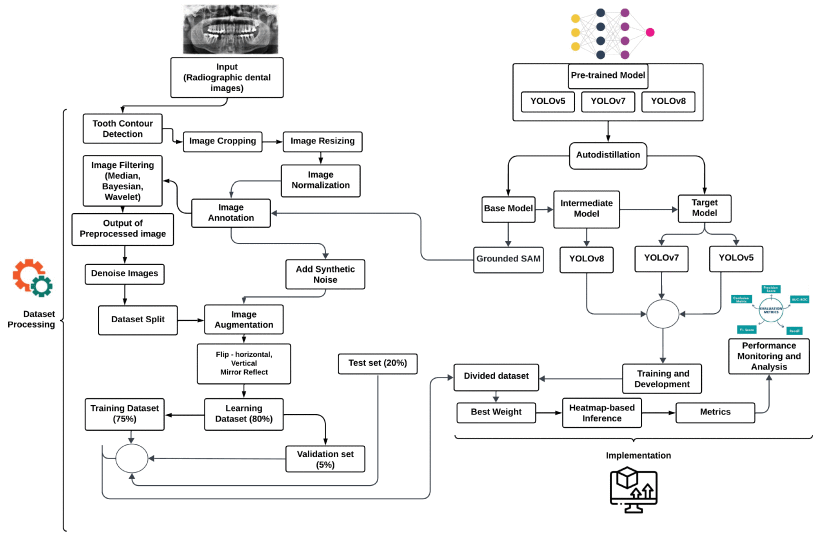
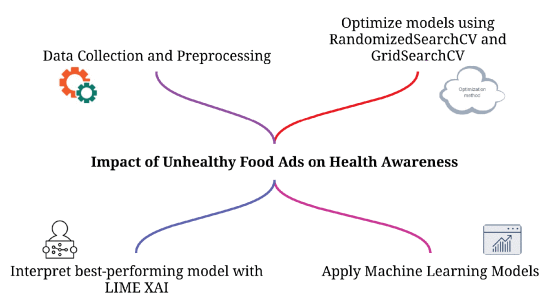
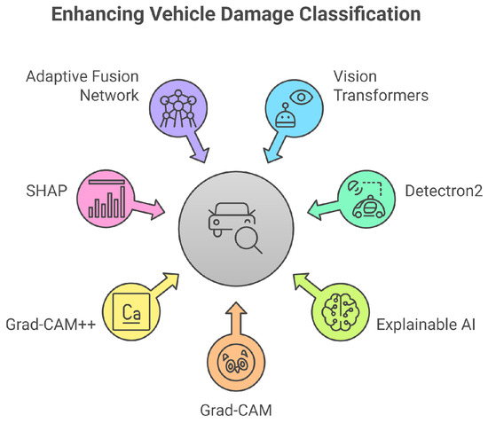
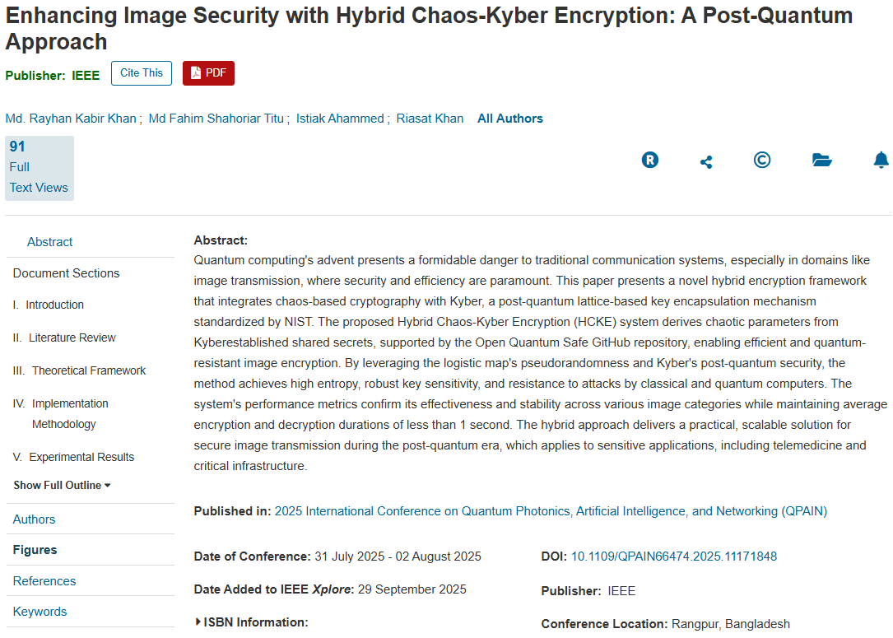
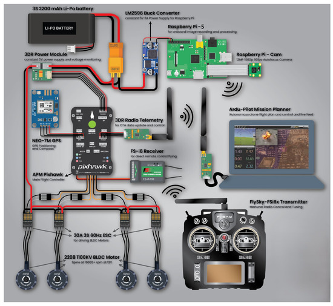
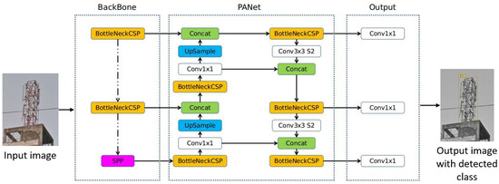
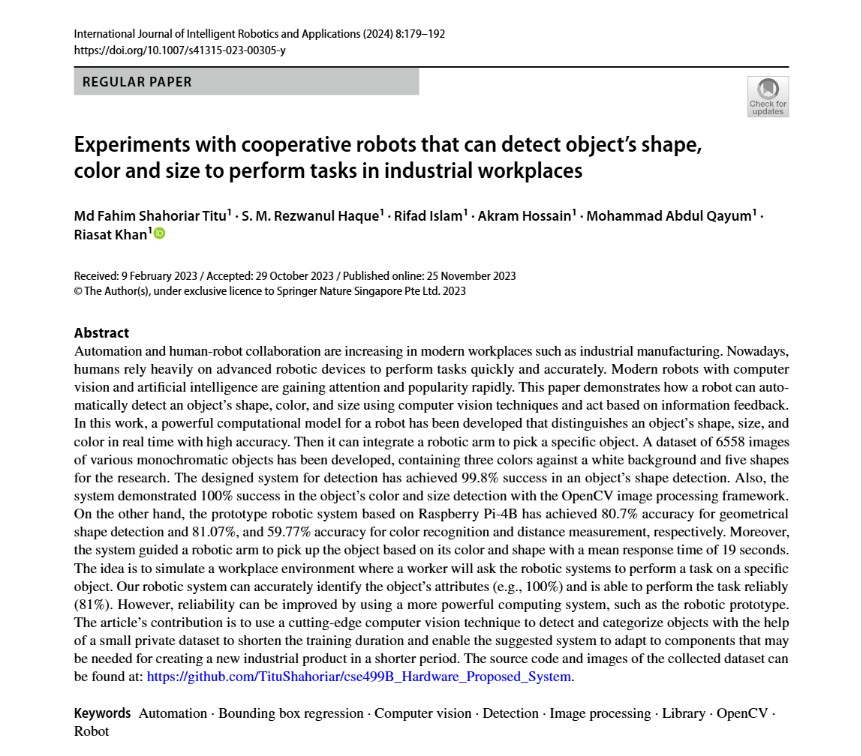

Research Publications
Peer-Reviewed Journal Articles and Conference Papers

Journal Article
Fusion of Image Filtering and Knowledge-Distilled YOLO Models for Root Canal Failure Diagnosis
IEEE Access, 2025

Journal Article
Predicting Adolescent Concern Over Unhealthy Food Ads Using Explainable AI
IEEE Access, 2025

Journal Article
Hybrid ViT-RetinaNet with Explainable Ensemble Learning for Fine-Grained Vehicle Damage Classification
Vehicles (MDPI), 2025

Conference Paper
Enhancing Image Security with Hybrid Chaos-Kyber Encryption: A Post-Quantum Approach
IEEE Int. Conf. on Quantum Photonics & AI (QPAIN), 2025

Preprint
Educational Tours and Practical Learning in Food Processing: A Student Perspective Case Study
OSF Preprint, 2024

Journal Article
Real-Time Fire Detection: Integrating Lightweight Deep Learning Models on Drones with Edge Computing
Drones (MDPI), 2024

Journal Article
Kidney Cancerous Tumor Prediction Using CNN System Architecture
Asian Journal of Medical Technology, 2024

Journal Article
Deep-Learning-Based Real-Time Visual Pollution Detection in Urban and Textile Environments
Sci (MDPI), 2024

Journal Article
Experiments with Cooperative Robots that Detect Object’s Shape, Color, and Size
Int. Journal of Intelligent Robotics and Applications (Springer), 2023